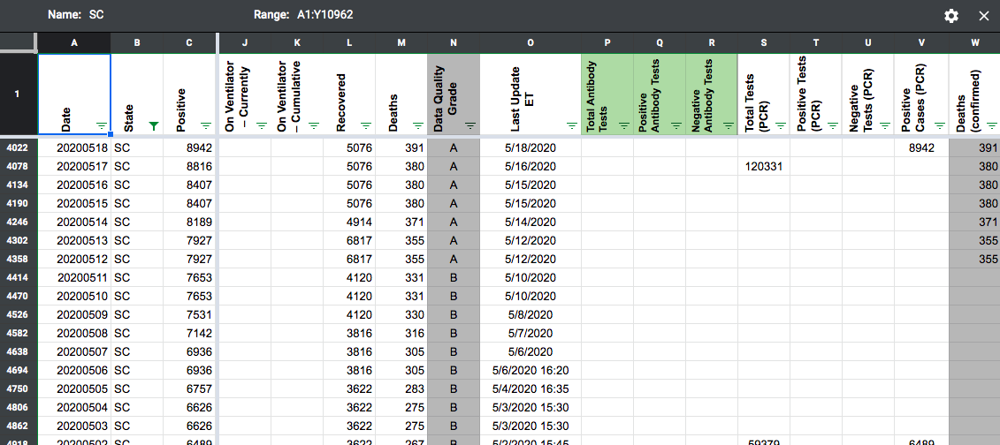

[SC] PCL Historicals: Backfill Positive Cases PCR values (before 4/29,5-3-5/17) from Positive cases
Issue number 693
jesseandersonumd opened this issue on July 29, 2020 at 9:32 am
Labels Historical Data Backfill
State: SC
Dates impacted: 5/03-5/17, before 4/29

Issue: We had a gap in data reporting for positive cases (PCR) from 5/03-5/17. We reported values prior to 5/03. We need to backfill these values. Prior to 6/16 all the values reported by South Caroline were confirmed cases.
Comments
Update (8/1): The gap in the values from 5/03-5/17 for positive cases (PCR) appears to easily be remedied by a simple copy and paste from positive cases (people, confirmed and probable). I think it might be a good idea for back-fill to confirm that this is doable. The source would simply be where we usually source data for these values, which is here: https://www.scdhec.gov/infectious-diseases/viruses/coronavirus-disease-2019-covid-19/sc-testing-data-projections-covid-19. Thank you for asking, Michal, and calling attention to this issue!
This issue has been automatically marked as stale because it has not had recent activity. It will be closed if no further activity occurs. Thank you for your contributions!
This issue has been closed because it was stale for 15 days, and there was no further activity on it for 10 days. You can feel free to re-open it if the issue is important, and label it as “not stale.”
Before and After snapshots in the attached sheet GH 693 - SC - Positive Cases PCR Timeseries Backfill.xlsx
Hi @jesseandersonumd Do we have the source for this or do we need back-fill team to get it? I am not sure based on the issue here…